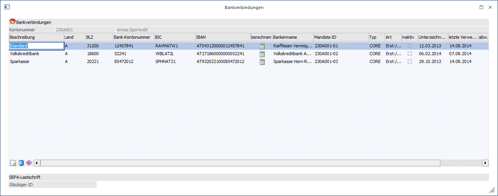
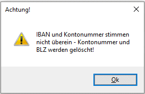
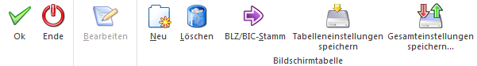

In dem Personenkontostamm können mehrere Bankverbindungen hinterlegt werden. Durch Anklicken des Buttons "Bankverbindungen" im Personenkonto (Register "Adresse") öffnet sich das Fenster "Bankverbindungen".

Ø Beschreibung
50stellig, alphanumerisch. Beschreibung der Bank
Ø Land
Eingabe des Länderkennzeichens oder Auswahl mit F9 aus dem Länder-Matchcode.
Damit kann auch definiert werden, dass die Bank in einem anderen Land ist, als das Personenkonto.
Beispiel
Personenkonto hat das Länderkennzeichen "DE" für Deutschland, und das Länderkennzeichen der Bank ist "A" für Österreich (da es sich um eine österreichische Bank handelt).
Wird nun ein Zahlungsverkehr mit diesem Konto und einer österreichischen Bank (lt. Bankenstamm) durchgeführt, so handelt es sich um einen Inlandszahlungsverkehr!
Ø BLZ
Eingabe der 20-stelligen, alphanumerischen Bankleitzahl oder Auswahl mit F9 aus dem Bankleitzahlen-Matchcode. Sollte diese Bankleitzahl noch nicht existieren, kommt eine entsprechende Meldung und die BLZ kann sofort angelegt werden.
Ø Bank-Kontonummer
Eingabe der Kontonummer des Lieferanten/Kunden, 30stellig
Ø Bankenname
Der Bankenname wird automatisch aus dem Bankenstamm übernommen.
Ø BIC
Der BIC wird automatisch aus der BLZ übernommen, wenn einer eingetragen ist. Der BIC kann auch in dem Fenster eingetragen werden und darf max. 11 Stellen lang sein.
Ø IBAN
Hinterlegung der IBAN zu dieser Bank.
Zur Eingabe der IBAN stehen 42 Zeichen (alphanumerisch) zur Verfügung. D.h. es ist eine Eingabe der max. Anzahl der IBAN von 34 Stellen + Leerzeichen nach jeder vierten Stelle möglich. Die IBAN (International Bank Account Number) ist eine international genormte Darstellung der Kontoverbindung und setzt sich aus dem Länder-Code, den Prüfziffern, der Bankleitzahl und der Kontonummer zusammen. Diese einheitliche Kontonummernsystematik auf europäischer Ebene ermöglicht eine kostengünstige, vollautomatische und maschinelle Verarbeitung von Zahlungen.
Wenn im Personenkontenstamm in der Bankverbindung oder den weiteren Bankverbindungen die IBAN hinterlegt ober geändert wird, dann erfolgt eine Prüfung auf die bislang hinterlegte Bankleitzahl und Kontonummer. Wird eine Abweichung festgestellt, wird nachfolgender Hinweis ausgegeben und die Bankleitzahl und Kontonummer gelöscht.

Ø berechnen
In dieser Spalte steht der IBAN-Rechner zur Verfügung, um eine IBAN aus den vorhandenen Bankdaten wie BLZ und Kontonummer zu errechnen.
Ø Mandats-ID
Hier kann die Mandats-ID hinterlegt werden. Das Feld ist maximal 35 Stellen lang und alphanumerisch. Bei Erstellung einer Lastschrift wird diese in die Datei übergeben.
Hinweis
Die Mandats-ID kann auch automatisch vom Programm über den Menüpunkt "Bankverbindungen editieren" erzeugt werden.
Ø Typ
Über die Auswahllistbox kann pro Mandat oder Bankverbindung zwischen CORE (Basis-Lastschrift) oder B2B (Firmenlastschrift) unterschieden werden.

Hinweis
Es ist nicht mehr Notwendig im Zahlungsverkehr auf die Zahlungsart zu achten.
Ø Art
Über die Auswahllistbox wird die Art des Mandates definiert. Zur Auswahl stehen:
ü Erst-/Folgelastschrift
Handelt
es sich um ein neues Mandat, so ist die Auswahl Erst-/Folgelastschrift
auszuwählen. Sobald dieses Mandat verwendet wurde und eine Clearing-Ausgabe
erfolgt ist, wird in das Feld "letzte Verwendung" ein Datum eingetragen. Damit
ist gekennzeichnet, dass dieses Mandat nun keine Erst- sondern eine
Folgelastschrift ist.
ü Einmallastschrift
Bei der
Einmallastschrift kann die Clearing-Ausgabe mit diesem Mandat nur einmalig
erfolgen. Wurde das Mandat verwendet, erfolgt ein Eintrag in die Spalte "letzte
Verwendung" und das Mandat kann nicht nochmals verwendet werden.
ü Letzte Lastschrift
Die Option
"Letzte Lastschrift" wird ausgewählt, wenn es sich um den letzten Einzug
handelt, dabei wird nach der Clearing-Ausgabe automatisch das Mandat auf inaktiv
gesetzt und die letzte Verwendung eingetragen.
Ø Inaktiv
Mit dieser Checkbox werden das Mandat und die Bankverbindung auf inaktiv gesetzt.
Ø Unterzeichnung
Angabe, ab wann das Mandat gültig ist. Damit das Mandat verwendet werden kann, muss ein Datum eingetragen sein.
Ø letzte Verwendung
Das Feld wird automatisch nach der Clearing-Ausgabe befüllt. Handelt es sich um eine Erstlastschrift, erfolgt hier kein Eintrag. Mit der Clearing-Ausgabe wird es befüllt und es wird zu einer Folgelastschrift.
Das Feld kann manuell mit einem Datum befüllt werden, wenn es sich um ein Mandat handelt, bei dem bereits eine Erstlastschrift erfolgt ist.
Das Feld dient auch zur Mandatsgültigkeitsüberprüfung. Wurde das Mandat 36 Monate nicht verwendet, wird es auf inaktiv gesetzt.
Ø Gläubiger-ID
Die Gläubiger-ID kann in diesem Feld nur bei Kreditoren hinterlegt werden.
Für das Lastschrift-Verfahren bei Debitoren wird die Gläubiger-ID des eigenen Unternehmens im Mandantenstamm hinterlegt.
Buttons

Ø Ok
Durch Drücken der F5-Taste oder durch Anklicken des OK-Buttons werden alle durchgeführten Änderungen bzw. Eingaben gespeichert.
Die Änderungen werden je nach Einstellung in den FIBU-Parametern oder der Vorlage in die Vor- und Folgejahre bzw. in die Submandanten übernommen.
Ø Ende
Durch Drücken der ESC-Taste oder durch Anklicken des ENDE-Buttons wird das Fenster geschlossen, durchgeführte Änderungen werden nicht gespeichert.
Ø Neu
Über diesen Button kann eine neue Bankverbindung eingetragen werden. Daraufhin ist es möglich eine neue Bankverbindung in der Tabelle einzutragen.
Ø Löschen
Durch Anklicken des Löschen-Buttons wird eine Vorhandene Bankverbindung wieder gelöscht.
Ø BLZ/BIC-Stamm
Hier können bestehenden BLZ bearbeitet und neue BLZ hinzugefügt werden.
Ø
Zusätzlich stehen nun im WinLine START unter Vorlagen das Feld der Bankverbindungen sowie die Bemessungsfelder für die Buchungsstabelle zur Verfügung.